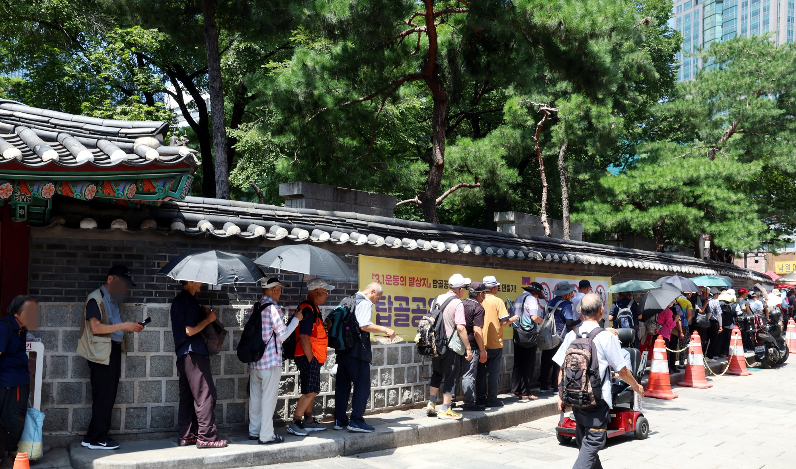

THE TEMPERATURE OF YOUR DAY
당신의 온도
서로의 템포
같은 도시에서도 우리는 모두 다른 템포로 살아갑니다.
당신의 온도를 확인했다면, 이제 서로의 템포를 살필 차례입니다.
오늘 서울의 최고기온
40.2도
집은 밤새 식지 않고, 출근길의 아스팔트는 달아오릅니다.
누군가는 냉방된 사무실로, 누군가는 다시 햇볕 아래로 향합니다.

00.0°C
사진 NEWSIS같은 출근길,
누군가는 10분을 걷고
누군가는 하루 종일 밖에 머뭅니다.
YOUR HEAT ROUTE
당신의 하루를 알려주세요
선택한 생활 조건을 바탕으로 폭염에 노출되는 시간과 강도를 가늠합니다.
01
어디에서 하루를 시작하나요?
집에 머문 열은 밤의 회복에도 영향을 줍니다.02
에어컨은 하루 얼마나 사용하나요?
03
주로 어떻게 이동하나요?
04
낮 동안 어디에서 일하나요?
05
함께 온도를 살펴야 할 사람이 있나요?
이 항목은 가구 전체의 돌봄 위험도를 반영합니다.
+0°C
사진 NEWSIS햇볕, 복사열, 노동 강도.
공식 기온에 기록되지 않는 온도가
몸 위에 더해집니다.
YOUR RESULT오늘 당신이
오늘 당신이
통과한 더위
서울 최고기온 40.2도를 기준으로 주거·냉방·이동·노동 조건을 더해 산출한 열 노출 추정치입니다.
※ 실제 측정 체온이나 의학적 진단이 아닙니다. 정확한 지표는 지역별 기온·습도·복사열과 실측 자료를 연결해 보정해야 합니다.
00.0°C
열 노출 수준 · 높음
고위험 노출 추정4시간 10분
집에 머문 열+1°
이동 중 더위+2°
일터의 열+2°
돌봄 위험낮음

NOT THE SAME HEAT당신 곁의 사람들은
당신 곁의 사람들은
오늘 몇 도를
견뎌야 했을까요?
나이가 들수록 더위를 감지하고 체온을 조절하는 능력은 떨어집니다. 어린이, 만성질환자, 냉방을 충분히 쓰지 못하는 이웃에게 같은 폭염은 더 오래, 더 무겁게 머뭅니다.
폭염은 모두에게 오지만,
누구에게나 같은 더위는 아닙니다.
서로의 온도를
살피는 일.
지금, 어느 때보다
따뜻한 관심이 필요합니다.